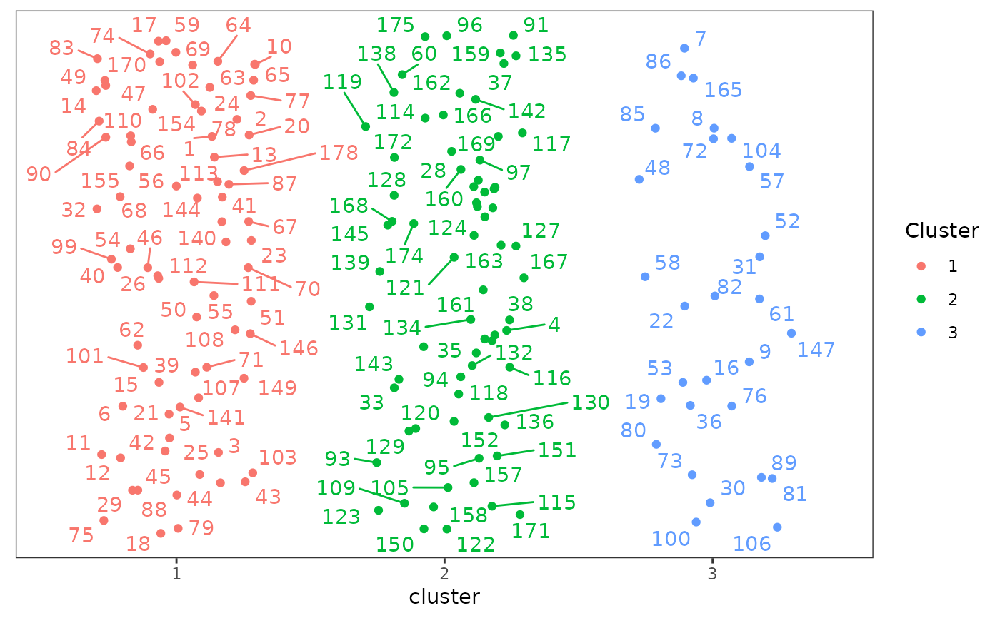
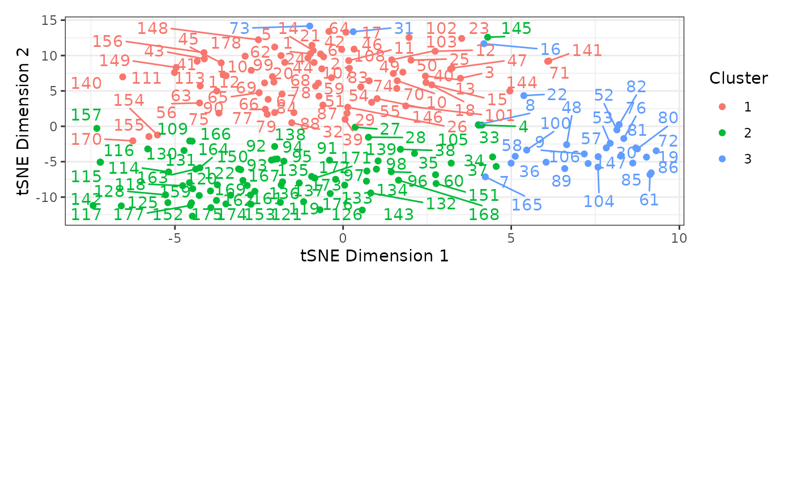

Estimate and plot character partitions
make_clusters.RdDetermines cluster (partition) membership for phylogenetic morphological characters from the supplied Gower distance matrix and requested number of clusters using partitioning around medoids (PAM, or K-medoids). For further and independently testing the quality of the chosen partitioning scheme, users may also poduce graphic clustering (tSNEs), coloring data points according to PAM clusters, to verify PAM clustering results.
Usage
make_clusters(dist_mat, k, tsne = FALSE,
tsne_dim = 2, tsne_theta = 0,
...)
# S3 method for cluster_df
plot(x, seed = NA, nrow = 1,
...)Arguments
- dist_mat
A Gower distance matrix, the output of a call to
get_gower_dist.- k
The desired number of clusters (or character partitions), the output from
get_sil_widths.- tsne
Whether to perform Barnes-Hut t-distributed stochastic neighbor embedding (tSNE) to produce a multi-dimensional representation of the distance matrix using
Rtsne::Rtsne. The number of dimensions is controlled by thetsne_dimargument. See Details. Default isFALSE.- tsne_dim
When
tsne = TRUE, the number of dimensions for the tSNE multidimensional scaling plots. This is passed to thedimsargument ofRtsne::Rtsne. Default is 2.- tsne_theta
When
tsne = TRUE, a parameter controlling the speed/accuracy trade-off (increase for faster but less accurate results). This is passed to thethetaargument ofRtsne::Rtsne. Default is 0 for exact tSNE.- ...
For
make_clusters(), other arguments passed toRtsne::Rtsnewhentsne = TRUE.For
plot(), when plotting acluster_dfobject, other arguments passed toggrepel::geom_text_repelto control display of the observation labels.- x
For
plot(), acluster_dfobject; the output of a call tomake_clusters().- seed
For
plot(), the seed used to control the placement of the labels and the jittering of the points. Jittering only occurs whentsne = FALSEin the call tomake_clusters(). Using a non-NAseed ensure replicability across uses.- nrow
For
plot(), whentsne = TRUEin the call tomake_clusters()andtsne_dimis greater than 2, the number of rows used to display the resulting 2-dimensional plots. Default is 1 for side-by-side plots.
Details
make_clusters calls cluster::pam on the supplied Gower distance matrix with the specified number of clusters to determine cluster membership for each character. PAM is analogous to K-means, but it has its clusters centered around medoids instead of centered around centroids, which are less prone to the impact from outliers and heterogeneous cluster sizes. PAM also has the advantage over k-means of utilizing Gower distance matrices instead of Euclidean distance matrices only.
When tsne = TRUE, a Barnes-Hut t-distributed stochastic neighbor embedding is used to compute a multi-dimensional embedding of the distance matrix, coloring data points according to the PAM-defined clusters, as estimated by the function make_clusters. This graphic clustering allows users to independently test the quality of the chosen partitioning scheme from PAM, and can help in visualizing the resulting clusters. Rtsne::Rtsne is used to do this. The resulting dimensions will be included in the output; see Value below.
plot() plots all morphological characters in a scatterplot with points colored based on cluster membership. When tsne = TRUE in the call to make_clusters(), the x- and y-axes will correspond to requested tSNE dimensions. With more than 2 dimensions, several plots will be produced, one for each pair of tSNE dimensions. These are displayed together using patchwork::plot_layout. When tsne = FALSE, the points will be arrange horizontally by cluster membership and randomly placed vertically.
Value
A data frame, inheriting from class "cluster_df", with a row for each character with its number (character_number) and cluster membership (cluster). When tsne = TRUE, additional columns will be included, one for each requested tSNE dimension, labeled tSNE_Dim1, tSNE_Dim2, etc., containing the values on the dimensions computed using Rtsne().
The pam fit resulting from cluster::pam is returned in the "pam.fit" attribute of the outut object.
Note
When using plot() on a cluster_df object, warnings may appear from ggrepel saying something along the lines of "unlabeled data points (too many overlaps). Consider increasing max.overlaps". See ggrepel::geom_text_repel for details; the max.overlaps argument can be supplied to plot() to increase the maximum number of element overlap in the plot. Alternatively, users can increase the size of the plot when exporting it, as it will increase the plot area and reduce the number of elements overlap. This warning can generally be ignored, though.
See also
vignette("char-part") for the use of this function as part of an analysis pipeline.
Examples
# See vignette("char-part") for how to use this
# function as part of an analysis pipeline
data("characters")
# Reading example file as categorical data
Dmatrix <- get_gower_dist(characters)
sil_widths <- get_sil_widths(Dmatrix, max.k = 7)
sil_widths
#> k sil_width
#> 1 2 0.2340255
#> 2 3 0.2626128
#> 3 4 0.1863738
#> 4 5 0.1243595
#> 5 6 0.1205568
#> 6 7 0.1102649
# 3 clusters yields the highest silhouette width
# Create clusters with PAM under k=3 partitions
cluster_df <- make_clusters(Dmatrix, k = 3)
# Simple plot of clusters
plot(cluster_df, seed = 12345)
#> Warning: ggrepel: 5 unlabeled data points (too many overlaps). Consider increasing max.overlaps

# Create clusters with PAM under k=3 partitions and perform
# tSNE (3 dimensions; default is 2)
cluster_df_tsne <- make_clusters(Dmatrix, k = 3, tsne = TRUE,
tsne_dim = 2)
# Plot clusters, plots divided into 2 rows, and increasing
# overlap of text labels (default = 10)
plot(cluster_df_tsne, nrow = 2, max.overlaps = 20)
#> Warning: ggrepel: 1 unlabeled data points (too many overlaps). Consider increasing max.overlaps
